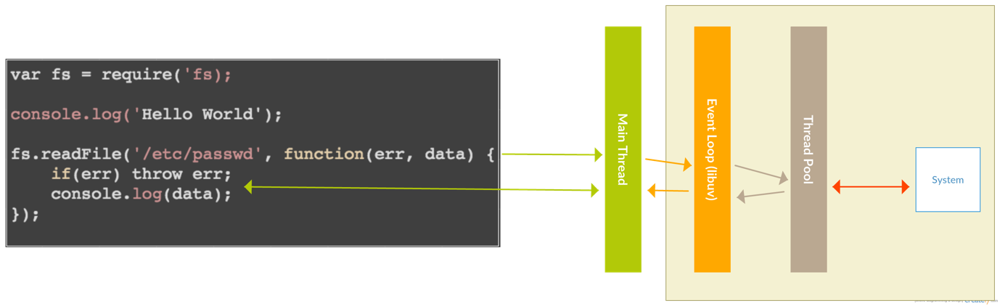
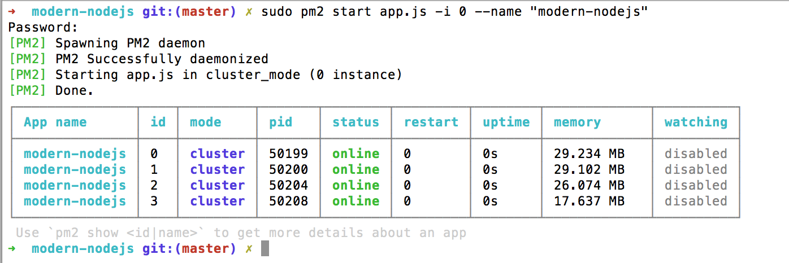
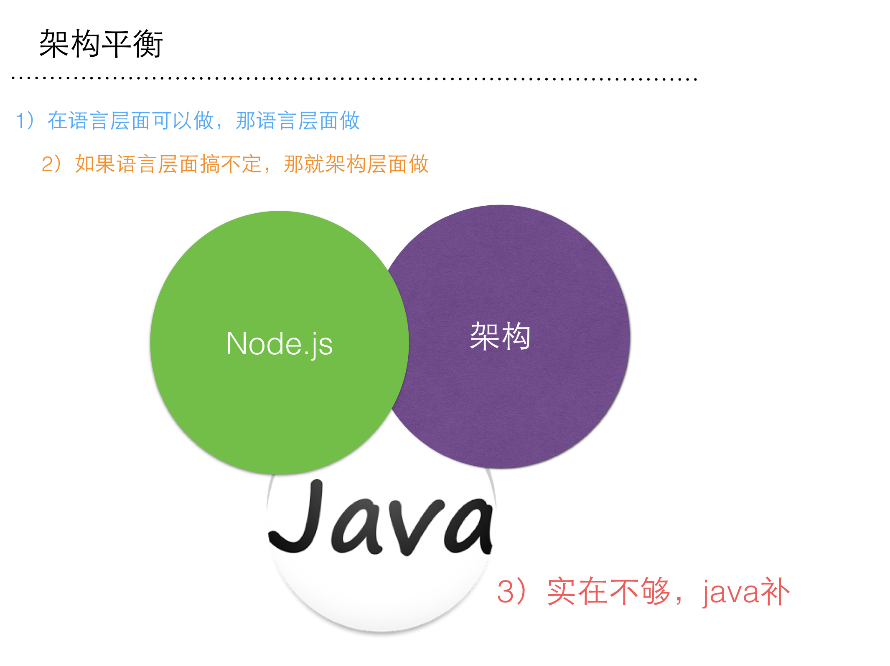
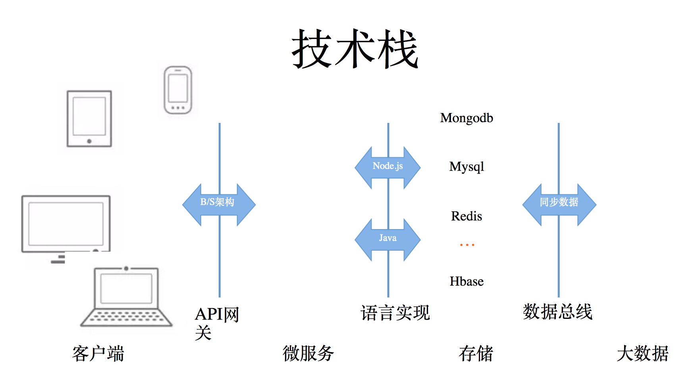
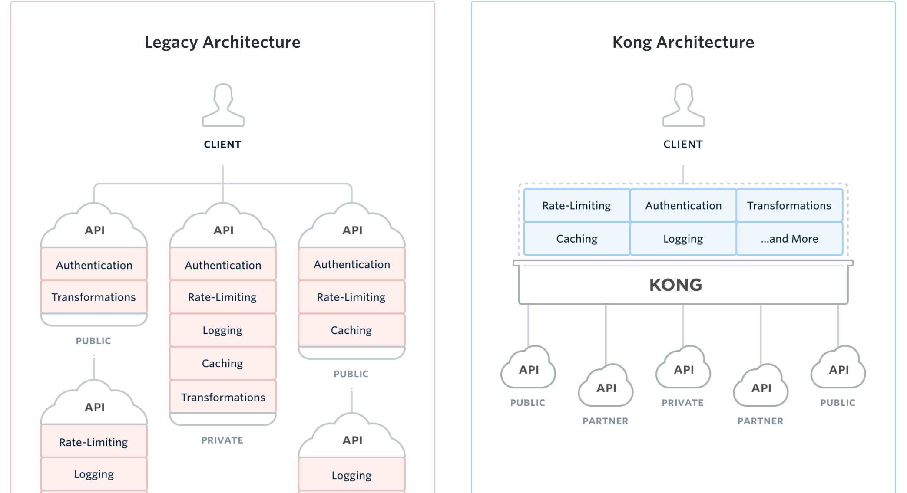

modern-nodejs
DockOne微信分享专用（2016-07-12）《微服务选型之Modern Node.js》
摘要
目前Node.js的发展非常快，大家可能还停留在：Node.js性能很好，Node.js里都是回调，写起来很恶心，Node.js只能做前端工具，Node.js是单线程部署会有问题，以及这样的八卦《uber用go替代Node.js重写了地理位置服务》...
可是真相呢？
在微服务盛行的今天，为什么我们要选用Node.js去构建微服务呢？本次分享将试图从以下2个方面给出答案：
- 被误解的Node.js：除了性能，都是病？
- 现代的Node.js：构建微服务利器
个人介绍
i5ting（江湖人称狼叔），空弦科技 CTO，StuQ 明星讲师，开源项目 Moajs 作者，Node.js 技术布道者，即将出版《更了不起的 Node 4：将下一代 Web 框架 Koa 进行到底》
曾就职在新浪、网秦，曾做过前端、后端、数据分析、移动端负责人、做过首席架构师、技术总监，全栈技术实践者，目前主要关注技术架构和团队梯队建设方向。

Mixu说的最经典的一句话：
Everything runs in parallel except your code!（在Node中）除了代码，一切都是并行的！
被误解的Node.js：除了性能，都是病？
- 单线程，会死？
- 异步（callbackhell）太恶心？
- mongodb事务？
- 接入层？
- uber用go替代Node.js重写了地理位置服务？
单线程，会死？
不是Node.js太弱，而是你不会用
先不要生气，听听看，为什么我会这样说？
Node.js为什么是单线程呢？
别只看缺点，先知道缺点是为什么来的？Node.js为什么是单线程呢？
node.js中的第一个基本论点是I/O是昂贵的：

当前编程技术中最大的浪费是等待I/O的完成。这里有几种用来处理这个性能影响的方法（来自Sam Rushing）：
- 同步：你同一时间只处理一个请求，每次一个。优点：简单；缺点：任何一个请求都可以挂起所有其他请求。
- fork新进程：你启动一个新进程来处理每个请求。优点：简单；缺点：无法很好的扩展，大量的连接意味着大量的进程。fork()是Unix程序员的锤子。因为它可用，所以每个问题看起来都像一个钉子。但是通常情况下都是大炮打蚊子。
- 线程：启动新的线程来处理每个请求。优点：简单，比使用fork对内核更加友好，因为线程占用更少的系统开销；缺点：你的机器可能没有线程，而且面向线程的编程由于担心对共享资源的访问控制，可能会很快地变得非常复杂。
第二个基本的论点是「每个连接一个线程」的模式是很耗内存的：[比如每个人都展示过的关于Apache与Nginx对比过的内存消耗图]
Apache是多线程的：它的一个请求产生一个线程（或者进程，取决于配置文件）。随着并发连接数的增加以及为了服务更多的并发客户端而对更多线程的需求，你可以看见系统统开销是如何吃掉内存的。Nginx和Node.js不是多线程，因为多个线程和多个进程会需要大量的内存。它们都是单线程的，但是是事件驱动。通过在一个线程中处理多个连接，这消除了由上千个线程/进程所产生的系统消耗。
至此理解Node.js的2大核心：（单线程的）异步事件和（单线程的）非阻塞io

其实最大的改变是，强制开发写代码的时候要以异步模式来思考，全部异步才会让大家在异步往同步的路上做更多的思考，才有现在的更加丰富流程控制（下一小节会详细讲，可以同步哦）。
会死？
单线程非常脆弱，随便弄点什么异常都会挂掉。
举个最简单的例子
$ npm init -y
$ npm install --save koa@next
$ touch app.js
创建Node.js项目标准流程
- 1）npm初始化，不论项目大小，它自己必须是一个模块，必须要有package.json
- 2）使用npm安装koa模块，安装之后才可以使用
- 3）创建入口文件app.js
app.js
const fs = require('fs');
const Koa = require('koa');
const app = new Koa();
// response
app.use(ctx => {
fs.readFile('somefile.txt', function (err, data) {
if (err) throw err;
console.log(data);
ctx.body = 'Hello Koa';
});
});
app.listen(3000);
执行，然后访问http://127.0.0.1:3000/，页面显示Not Found
$ node app.js
/Users/sang/workspace/github/modern-nodejs/app.js:8
if (err) throw err;
^
Error: ENOENT: no such file or directory, open 'somefile.txt'
at Error (native)
如果只有1个接口，挂了就挂了，可绝大部分情况是一台服务器上至少有有几个，几十个，甚至更多接口，不能因为你一个接口异常就导致所有的都挂掉啊？
你心里一定在骂：太浪费了。。。
捕获uncaughtException
改进版本app2.js
const fs = require('fs');
const Koa = require('koa');
const app = new Koa();
// response
app.use(ctx => {
if (ctx.path == '/good'){
return ctx.body = 'good'
}
fs.readFile('somefile.txt', function (err, data) {
if (err) throw err;
console.log(data);
ctx.body = 'Hello Koa';
});
});
process.on('uncaughtException', function (err) {
console.log(err);
})
app.listen(3000);
使用process.on('uncaughtException', function (err) {})来处理，这样就不会crash了。可是很多应用都没有做这样的基本处理，不死才怪呢？
捕获异常
app3.js
const fs = require('fs');
const Koa = require('koa');
const app = new Koa();
// response
app.use(ctx => {
if (ctx.path == '/good'){
return ctx.body = 'good'
}
fs.readFile('somefile.txt', function (err, data) {
try {
if (err) throw err;
console.log(data);
ctx.body = 'Hello Koa';
} catch (e) {
// 这里捕获不到 readCallback 函数中抛出的异常
console.log(e)
} finally {
console.log('离开 try/catch');
}
});
});
app.listen(3000);
- 1）Node.js里有约定，同步代码才能捕获异常，异步代码不能使用
- 2）代码里都是try/catch太恶心了。。。
- 3）使用try/catch成本较高，除非必要，一般不用
所以这种可能性也必将小的
forever
当遇到crash的时候，再重启就好了么？Node.js很早就有了专门做这个模块
先全局安装这个模块，然后在terminal里就有forever命令
$ [sudo] npm install forever -g
然后以app.js为例
$ forever start app.js
此时访问http://127.0.0.1:3000/，页面显示Not Found，崩溃，然后forever处理crash事件，然后再起一个Node线程，于是又可以处理了。。。
forever就是打不死的小强
小集群：单台服务器上多个实例
至此，上面讲的都是单个实例。现在的服务器大多是多核的，所以无法充分利用多核优势。比较好的办法就是使用cluster模块
cluster模块（集群）是Node.js在0.10之后就有的模块，专门用于解决多核并发问题。
大家知道，nginx或haproxy等集群都是1主多从，主机的端口通过负载均衡算法，将请求转发到slave机器上。多机器是这样的，在1台机器上起多个实例，对这些实例进行集群也是一样的原理。
这里推荐使用pm2模块，绝大部分的产品环境部署都使用pm2的，以前有用forever的，但大部分都转到pm2了。
先全局安装这个模块，然后在terminal里就有pm2命令
$ [sudo] npm install pm2 -g
$ pm2 start app.js -i 0 --name "modern-nodejs"

是不是非常简单？
当访问http://127.0.0.1:3000/，页面显示Not Found，崩溃，此时看一下pm2的状态

可以看到第一个线程，restart显示为1，也就是说它也也有forever一样的功能，当崩溃的时候它会自动创建新的线程来继续服务。
pm2非常强大，如无缝重载，各种监控，日志，部署等，自己摸索吧
大集群：多台机器
这就和其他语言一样了，常见的nginx或haproxy类的即可。
这里就不熬述
总结
- 单个应用实例，可以适当的处理，减少崩溃几率
- 单个应用实例crash之后，采用forever自动重启，继续服务
- 利用多核cluster，同时在一台服务器上启动多个实例（同时崩溃的几率有多大呢？非常小吧？但也不是可能）
- 你的应用线上部署就只部署1台服务器么？这种几率其实也蛮小的，多台服务器也要做集群
如果所有集群里的服务器都crash了呢？这是运维水平问题了，招个运维吧，和Node.js无关
异步（callbackhell）太恶心？
Node.js的设计初衷为了性能而异步，现在已经可以同步了，你知道么？
js流程控制的演进过程
js流程控制的演进过程，分以下5部分
- 同步代码
- 异步JavaScript: callbackhell
- Promise/a+
- 生成器Generators/yield
- Async函数/await（以前说是es7 stage-3）

看起来挺简单的，各位自测一下，当前是哪个阶段？
Promise
从promise开始，Node.js已内置Promise对象，另外bluebird、q这样的模块支持的也非常好，性能甚至比原生的还好。
为了让大家从回调的地狱中回到天堂，Promise你值得拥有
Promise是一种令代码异步行为更加优雅的抽象，有了它，我们就可以像写同步代码一样去写异步代码。它是从Common JS规范分裂出来的，目前主流是Promose/A+规范。
jQuery很早就引入了Promise的概念，主要是deffered和promise对象。而在Angularjs里也有类似的实现，叫$q，其实是promise库q的精简版。
直接看代码
var step2 = function(data){
console.log(data)
return new Promise(function(resolve, reject){
reject(new Error('reject with custom err'))
});
}
hello('./package.json').then(step1).then(step2).catch(function(err) {
console.log(err)
})
在koa里可以这样用
exports.list = (ctx, next) => {
console.log(ctx.method + ' /users => list, query: ' + JSON.stringify(ctx.query));
return User.getAllAsync().then(( users)=>{
return ctx.render('users/index', {
users : users
})
}).catch((err)=>{
return ctx.api_error(err);
});
};
把callbackhell该成thenable的写法，是不是看起来清爽一些了呢？
generator和yield
其实还有更好的，在Node 0.12开始就支持generator和yield了
es6里function * () {}为generator，在generator里使用yield转让处理权，generator原意是为了计算用的迭代器，但结合co这样的generator执行器，可以更好的进行“同步”流程控制。
exports.list = function *(ctx, next) {
console.log(ctx.method + ' /students => list, query: ' + JSON.stringify(ctx.query));
let students = yield Student.getAllAsync();
yield ctx.render('students/index', {
students : students
})
};
看一下yield后接的异步操作（发送http请求），可以获取结果，这不就是和同步一样了么？
Async函数
可是generator还是比较麻烦，需要执行器，generator执行的时候，需要先生成对象，然后next进行下一步。这样做起来还是比较麻烦，能不能不需要执行器啊？于是async函数就应运而生了。
async函数es7 stage-3的特性，可惜差一点就进入到es7规范了。async函数里使用await可以做到和yield类似的效果，但await只能接promise对象。
async 可以声明一个异步函数，此函数需要返回一个 Promise 对象。await 可以等待一个 Promise 对象 resolve，并拿到结果。
以下便是个例子
async function a1() {
return new Promise((resolve, reject) => {
setTimeout(resolve, 1000);
})
}
async function a2() {
await a1();
console.log("2333");
}
a2()
使用babel或runkoa执行，就可以了，是不是更简单？await可以和yield一样，让异步逻辑像同步一样处理？
exports.list = async (ctx, next) => {
console.log(ctx.method + ' /students => list, query: ' + JSON.stringify(ctx.query));
try {
let students = await Student.getAllAsync();
await ctx.render('students/index', {
students : students
})
} catch (err) {
return ctx.api_error(err);
}
};
这里Student.getAllAsync();是数据库操作，是异步处理，是Promise封装的，通过await就变成了同步的，可以直接获得students，是不是非常简单？
总结
- async函数是趋势，如果Chrome 52. v8 5.1已经支持async函数了，Node.js支持还会远么？
- async和generator函数里都支持promise，所以promise是必须会的
- generator和yield异常强大，不过不会成为主流，所以学会基本用法和promise就好了，没必要所有的都必须会。
- co作为generator执行器是不错的，它更好的是当做Promise 包装器，通过generator支持yieldable，最后返回Promise，是不是有点无耻？
结论：Promise是必须会的，那你为啥不顺势而为呢？
mongodb事务？
mongodb是NoSQL里最像RDBMS的，又有非常好的性能，所以是目前最流行的，MEAN技术栈选用mongodb也是这个原因。
当mongodb的问题是事务，mongodb数据库中操作单个文档总是原子性的，然而，涉及多个文档的操作，通常被作为一个“事务”，而不是原子性的。因为文档可以是相当复杂并且包含多个嵌套文档，单文档的原子性对许多实际用例提供了支持。尽管单文档操作是原子性的，在某些情况下，需要多文档事务。
- 利用Document上的冗余，做宽表
- 使用两阶段事务提交也可以
但无论如何它还是没有rdbms的事务处理强的，所以还是要根据需求来处理
- 严格事务的，比如交易，账单等，可以采用mysql等rdbms
- 非严格事务的，使用mongodb
把每个服务都写的非常小，1个服务对应一个数据库，这样一个node应用对应一个数据库就无所谓你选mysql还是mongodb了。如果不是类似微服务这样的架构，那么只选1种数据库是非常痛苦的，当分库分表的时候更痛苦的。
用Node.js做接入层？
很多公司用Node.js做接入层，比如阿里系的天猫和淘宝，后端大量的c/c++和java，前端用Node.js一点点替换php，据说如果都替换完成，可以每年服务器上节省电费700百万（不知真假）
所谓的接入层就api层以前的（前端 + httpserver-by-node），然后node去调用api服务，返回给前端。node的作用就是控制器，从api取数据，然后返回给渲染层。
这是一种切入办法，其实node远不止做接入层
- 前端构建工具（cordova，electron，gulp，npm等）
- 接入层（最容易）
- api(可接mysql，可接mongdob，可以满足绝大部分需求)
- im，成本最低的实现方式
- 其他i/o密集的应用
Node.js即使不优化，性能也非常好，优化也比其他语言简单
其他问题，可以通过架构平衡去解决，时间原因，这里就不相信讲解了。

uber用go替代Node.js重写了地理位置服务？
大家都是知道uber是大量采用Node.js开发的公司，而2016年4月12日infoq发了一篇名为《Uber是如何基于Go语言构建高QPS服务的？》
http://www.infoq.com/cn/articles/uber-build-high-qps-services
很多人问我，是不是uber以后要用go去替代Node.js？
我的回答是，目前看它只是地理查询的地方使用go重写了，这并不意味着，它完全会用go替代Node.js的，而且在绝大部分场景下Node.js是有它的优势的，除了文章讲的场景外，真的很少能找出差异特别大的点，各有优缺点，一个公司想弃用一项技术栈也是很难的一件事儿。
先看一下文章说的“选择Go的原因”
当我们评估所要使用语言的时候，Node.js正是广大的服务设计团队普遍采用的编程语言。而我们也在Node.js的使用方面有着丰富的经验。然而，Go语言却由于以下原因满足了我们的需求：
- 高吞吐量和低延迟的需求。Uber的手机端App在发送请求时，必然会触发一次查找地理围栏的操作。而服务器必须要能够对每秒上万次的请求以99%的概率响应时间小于100ms的速度进行响应。
- CPU密集型负载。查找地理围栏需要使用计算密集型的Point-In-Polygon（PIP）算法。尽管Node.js可以很好的用于I/O密集型的服务，解释执行以及动态类型定义等的特性使得它并不适合于我们的使用场景。
- 非中断式的后台加载。为了保证查询操作是基于最新的地理围栏信息而进行的，服务必须要能够根据多个数据源的信息在后台实时刷新内存中的地理围栏数据。因为Node.js是单线程的，后台刷新很可能会占用一定的CPU时间（如CPU密集型的JSON的编译工作），最终导致部分查询的响应时间过长。但是，对于Go语言而言，这完全不是问题。Goroutine可以运行在多个CPU核上，并且可以在响应前端查询的同时后台并行进行刷新数据的工作。
这个理由解释是ok的，go确实在cpu密集应用上有它的优势，异步流程控制上比Node.js要强非常非常多，对于一些tcp长连接（im、游戏），多核计算类的都有非常好的性能优势。
可是，亲，你的瓶颈出在哪里呢？真的是性能么？
黑一下go语言吧: 够(go)不着
go的缺点是很难够(go)着
- 没有好的包管理，目前生态还不是特别好，选择的可能不多
- 没有好的调试工具，tdd/bdd新手难掌握(vscode-go还凑合)
- 语法问题，强c背景的人不多
总结：适合高端人群，但对团队开发是有门槛的，不适用国内大部分大团队，当然如果你的团队足够牛逼，选go是非常好的选择。
羊和骆驼的故事告诉我们：够得着你牛逼，够不着，累死你也够不着
架构的演进
架构的演进过程，一般如下
- 无论如何，先实现(不择手段，或者说用自己擅长的)
- 优化（一棵树上吊死）
- 服务化（东拼西凑，捉襟见肘，趋于稳定）
- 合适的技术做合适的事儿（有选择的挖坑优化）
如果Uber的服务都非常成熟了，那么它是有能力完全用其他语言重写的，用go重写地理查询服务，是因为它已经演化到了第四阶段，有了之前的精力才有今天的可转变。
其实，我对语言并没有什么偏见，按照目前技术发展速度来看，未来应该是一个技术多样性，语言性能趋于相同，大家只看喜好来决定选用那种语言的局面，而不是语言之争。
其实最终还是要回归到架构的本质上去的，场景决定技术。
在未来很长一段时间，Node.js都会是Uber的主要服务，即使替换也会一点一点的来，积累与成本是不可能短时间消失的。
我们要问的是：“现在处于什么阶段？当前场景下使用Node.js是否合适？”，而不是看人家用go重写了。。。
合理选型
Node.js是单线程的，从上面的说明，我们可以知道Node.js对于io密集型应用开发是非常棒的，其他，如cpu-密集型的就不是那么适合。
那时下最流行的直播来说，Node.js可以做直播么？
肯定是可以的，但全是Node.js效率不会特别高，比较直播音频、视频、图片、编辑码，以及socket不是Node.js最强的点，像很多公司采用go去实现这部分是非常棒的。
- 实时视频处理（推荐go）
- 其他用Node.js做都非常合适，无论是聊天室，弹幕，还是各种rank，api等
现代的Node.js：构建微服务利器
- 小而美
- 同步的Node.js
- 善用npm，实现3化（模块化，最小化，服务化）
- 使用docker compose作为本地开发环境
- 微服务选型
哲学：小而美
使用Unix的方式：
Developers should build a program out of simple parts connected by well defined interfaces, so problems are local, and parts of the program can be replaced in future versions to support new features.
保持模块足够小（内聚），模块应该只做一件事！
The Node philosophy is to build small composible parts that do one thing (the UNIX philosophy), and if that one thing can be done in "userland", then it doesn't belong in core.
"Small is beautiful"是Unix哲学9条里的第一条，但对Node.js来说，它实在是再合适不过了
http://blog.izs.me/post/48281998870/unix-philosophy-and-nodejs
- Write modules that do one thing well. Write a new module rather than complicate an old one.
- Write modules that encourage composition rather than extension.
- Write modules that handle data Streams, because that is the universal interface.
- Write modules that are agnostic about the source of their input or the destination of their output.
- Write modules that solve a problem you know, so you can learn about the ones you don’t.
- Write modules that are small. Iterate quickly. Refactor ruthlessly. Rewrite bravely.
- Write modules quickly, to meet your needs, with just a few tests for compliance. Avoid extensive specifications. Add a test for each bug you fix.
- Write modules for publication, even if you only use them privately. You will appreciate documentation in the future.
以前吹牛那性能说事儿，现在那npm说事儿，也就是说npm目前是最好的包管理器，比其他语言都要好，它的模块数也非常多。
可以这样说，Node.js世界里，一起都是模块，无论写点啥，都推荐你先npm init然后再写代码。
这就有一个问题，模块的定义，是不是3行代码也可以是一个模块呢？
知名Node.js程序员 sindresorhus 说过
Sometimes code is complex because it has to be. It might handle more edge cases which are found over time and makes the code more durable.
对于模块使用问题，我觉得还是要谨慎一点，能自己做的尽量自己做，如非必须，尽量少用。
同步的Node.js
上面讲了generator和async函数可以让Node.js代码写的跟同步一样，推荐async + promise用法。
异常处理
Node.js里关于异常处理有一个约定，即同步代码采用try/catch，非同步代码采用error-first方式。对于async函数俩说，它的await语句是同步执行的，所以最正常的流程处理是采用try/catch语句捕获。
try {
console.log(await asyncFn());
} catch (err) {
console.error(err);
}
这是通用性的做法，很多时候，我们需要把异常做的更细致一些，这时只要把Promise的异常处理好就好了。
- then(onFulfilled, onRejected)里的onRejected
- catch
实践
- promise更容易做promisefyAll
- async函数无法批量操作
那么，在常见的web应用里，dao层使用promise比较好，而service层，使用async/await更好
dao层使用promise
- crud
- 单一模型的方法多
- 库自身支持promise
这种用promisefyAll基本几行代码就够了，一般单一模型的操作，不会特别复杂，应变的需求基本不大。
而service层一般是多个model组合操作，多模型操作就可以拆分成多个小的操作，然后使用await来组合，看起来会更加清晰，另外对需求应变也是非常容易的。
总结
- async函数语义上非常好
- async不需要执行器，它本身具备执行能力，不像generator
- async函数的异常处理采用try/catch和promise的错误处理，非常强大
- await接Promise，Promise自身就足够应对所有流程了
- await释放Promise的组合能力，外加Promise的then，基本无敌
这就是我们要追赶的趋势。如果无意外10月份之前就会发布新的Node.js版本，会支持async函数哦。即使现在，用babel编译，也还是可以的。
善用npm，实现3化（模块化，最小化，服务化）
使用npm模块化
- 使用npmjs的private私有模块（目前做法）
- 使用npm的本地模块开发方法（测试和部署都非常快）
- 搭建npm私服（todo）
通过识别业务边界，能拆分服务的都拆分成服务，保证模块的粒度最小。
比如
hz-api-admin
hz-api-crm
hz-api-order
hz-api-statistics
hz-api-stock
hz-dao-cloud
hz-dao-private
hz-dao-usercenter
使用docker compose作为本地开发环境
Dockerfile
app:
build: .
volumes:
- .:/src
links:
- mongo
- redis
- api_order
ports:
- 3000:3000
redis:
image: redis
mongo:
image: mongo
api_order:
image: api_order
自己构建服务镜像，类似redis、mongodb这样的，组合镜像，可以快速构建开发环境。
使用docker compose和Node.js结合是非常方便的，外加其他docker技术，可以让开发流程更顺畅。
微服务选型
技术栈

微服务选型

HTTP API
采用Koa.js 2.x作为http api层框架，主要封装和组装rpc服务。
Koa的优点
- 简单，可定制性强
- 高性能，即使同样不优化，性能也比较好
- “同步”流程控制，支持promise，generator，async函数
当前做法
- 目前使用generator和yield + promise来做异步流程控制
- 等node原生支持async函数，全面切换到async + promise（预计10月份）
使用rpc拆分服务
比较好的做法是http api调用rpc，提供最终api
- 单一调用，简单接口
- 多个调用，可以封装成上层服务，也可以组合用
rpc框架，如dubbo，dubbo-x，motan，grpc等，我们选的是grpc
node.js还有senecajs.org专门做微服务的，唯一的缺点是多语言支持，其他都非常好。
rpc拆分后，拆分db
一般拆分rpc都会按照某些业务主体划分，所以数据库是可以拆分出去
比如
- 库存
- 订单
- 评论
- 弹幕
其实，只要保证用户一致，其他数据库保存各自的数据就好。在数据分析的时候，汇总到一起即可，无论etl还是stream都可以。
服务和db拆分的好处是便于横向扩展，这样就可以做到动态伸缩，哪里有瓶颈治哪里，在架构调优上是有明显优势的。
服务多，就要服务治理、发现
采用consul作为服务发现软件(etcd也不错)
api多了，怎么办呢？
都是重复的，如日志、权限等，这时，我们需要api Gateway。
https://getkong.org/
通过nginx + lua实现，提供插件机制，非常好用。

容器化
剩下的就是大家熟悉的docker了
总结
架构是相同的，其实语言是无所谓的。使用Node.js可以最小成本的快速构建服务，无论从技术难度，运维，还是未来趋势上都是比较好的技术选型。
如果大家有兴趣，也可以看看我写的《全栈工程师之路-Node.js》
联系我